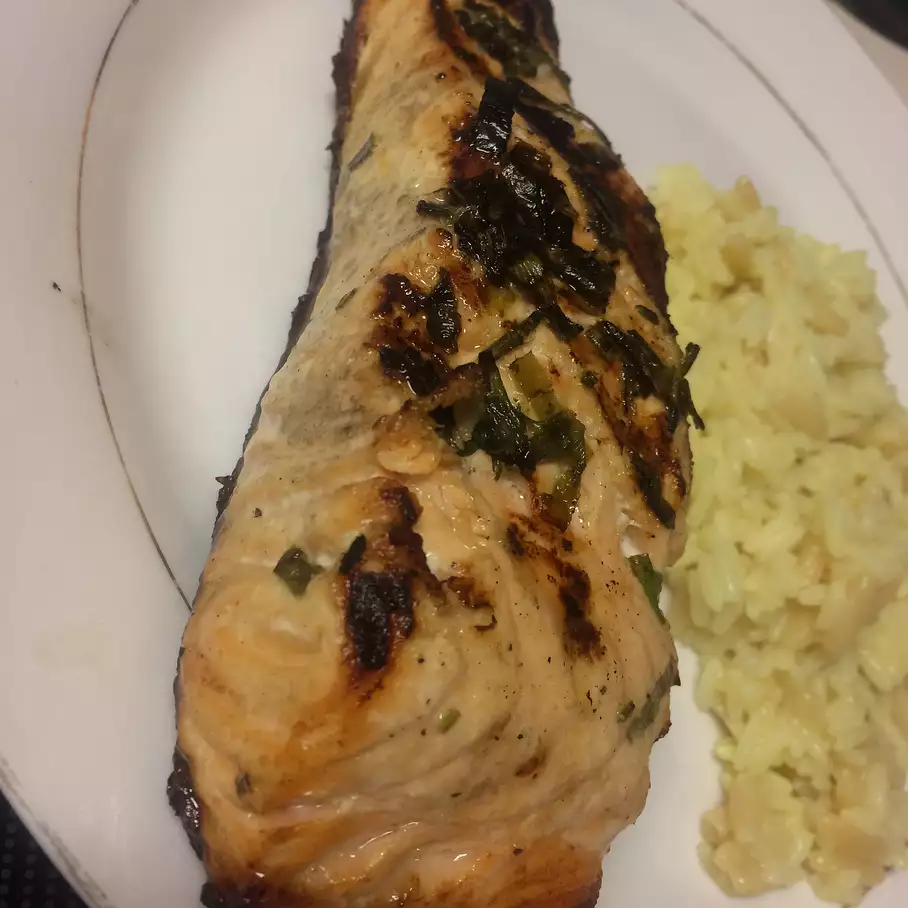

Lemon Herb Grilled Salmon

Description
A delicious Lemon Herb Grilled Salmon recipe. This recipe is perfect for families and people who love seafood. This is a very quick seafood recipe, making it perfect for the busy worker.
Ingredients
- ½ dcup olive oil
- ¼ cup lemon juice
- 4 green onions, thinly sliced
- 1 tablespoon chopped fresh parsley
- 1 teaspoon chopped fresh rosemary
- 1 teaspoon chopped fresh thyme
- ½ teaspoon salt
- ⅛ teaspoon black pepper
- ⅛ teaspoon garlic powder
- 3 pounds salmon fillets
Steps
- Combine olive oil, lemon juice, green onions, parsley, rosemary, thyme, salt, black pepper, and garlic powder in a small bowl; reserve 1/4 cup for basting.
- Place salmon fillets in a shallow dish and pour remaining marinade on top. Cover and refrigerate for 30 minutes.
- Preheat the grill for medium heat and lightly oil the grate.
- Remove fillets from the refrigerator; discard marinade. Place fillets on the preheated grill skin-side down. Cook, basting occasionally with reserved marinade, until fish flakes easily with a fork, 15 to 20 minutes.